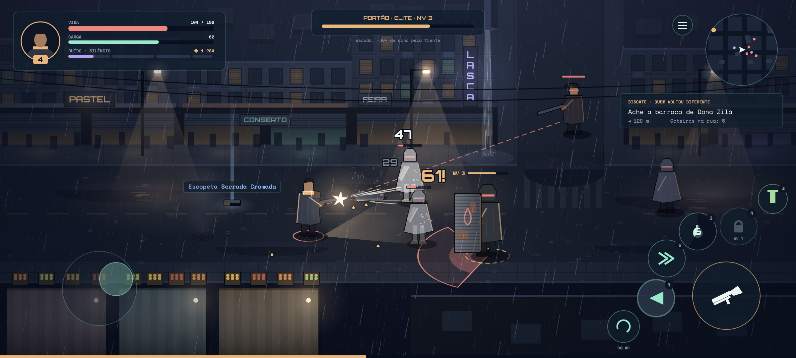

Dossiê de design · ARPG cyberpunk noir para navegador
DARK NOISE
Em Porto Vésper chove há onze anos, e cada implante que deixa você mais forte empresta um pedaço da sua cabeça para a cidade. Abra caminho por cinco bairros, monte o seu corpo peça por peça e decida quanto de você sobra no final.
versão 0.215 de novembro de 2026Canvas 2Dcelular e PC, tela cheiapt-BR
Porto Vésper em corte. As Torres ficam em cima do Mercado Baixo e despejam nele a chuva que desviam. A campanha dá a volta na cidade e termina logo acima de onde começou. O nível dos inimigos é a única porta entre os bairros.
Visão geral
O que o jogo é, como se chama e o que não pode faltar.
Nome
escolhido pelo usuárioDark Noise
Nome do jogo, escolhido pelo usuário junto com a troca do visual para o Aurora noir. Vale para título, ícone e menu.
medidorRuído
Foi o nome provisório. Continua no jogo como o nome do medidor de instabilidade que liga implantes, história e finais.
descartadoPorto Vésper
Bom nome para a cidade, fraco como promessa: não diz o que o jogador faz nem o que perde.
descartadoChuva Longa
Acerta o clima noir, mas deixa os implantes e a pergunta central de fora.
Pitch
ARPG de ação em tempo real para jogar com dois polegares: bandos de inimigos, habilidades com recarga, loot com raridade e uma cidade aberta de cinco bairros que se reconhecem pela cor.
Todo poder vem de um implante, e todo implante cobra: em Ruído na cabeça, em dívida com o banco da fabricante ou em atenção da própria fabricante. A pergunta do jogo, “o que é humano?”, é respondida pelo que o jogador aceita instalar.
Um minuto de jogo
Pegar um biscate com um vendedor ou atravessador.
Entrar na rua. Bandos de 4 a 8 inimigos a cada 15 ou 20 metros.
Juntar o bando, estourar com dano em área, esquivar do aviso coral.
Passar por cima das lascas e dos itens para coletar.
A cada dois ou três bandos, um elite com ataque de aviso longo.
Voltar ao vendedor: equipar, vender, instalar. O Ruído sobe e a cidade reage.
Pilares de design
Horda em dez segundos
Cada encontro se resolve rápido: juntar, estourar, esquivar, coletar. Uma sessão boa cabe em 5 a 15 minutos.
Poder tem preço
Nenhum implante é só bônus. Ruído, dívida e Atenção são três contas diferentes, e o jogador escolhe qual pagar.
Cinco bairros, cinco climas
Cor, clima, inimigos e uma regra própria por bairro. Dá para saber onde se está por uma captura de tela.
Polegar primeiro
Tudo funciona com joystick, cinco botões e mira automática. O PC herda o mesmo jogo com teclado.
Noir que se joga
Os dilemas mudam reputação, vendedores, inimigos e finais. Uma escolha que só muda uma fala não entra.
História
Um caso de pessoa desaparecida que não desapareceu. Cinco atos, um por bairro.
Premissa
Porto Vésper é uma cidade-porto empilhada. Há quinze anos, na Semana Surda, a rede da cidade caiu e nove mil pessoas morreram em sete dias. A Vítrea Biossistemas reergueu tudo com o CORAL, um sistema que administra a cidade usando pedaços emprestados da atenção de cada pessoa com implante lacrado.
O empréstimo tem nome de rua: Ruído. Quem empresta tudo fica afinado: calmo, pontual, saudável e sem ninguém em casa. A Vítrea chama isso de cura.
Protagonista
Faro vive no Mercado Baixo e acha gente e coisa por encomenda. Nome, aparência e passado vêm do arquétipo escolhido. Em comum: Faro começa cru, sem um único implante.
Seu Nicanor, feirante, contrata Faro para descobrir o que aconteceu com a filha, Maíra, que voltou do Mutirão da Visão com olhos novos e outra pessoa dentro. Para seguir a pista, Faro vai precisar instalar exatamente aquilo que está investigando.
Antagonista
Diretora Otília Ferraz, fundadora da Vítrea e primeira pessoa afinada por vontade própria. Não mente e não ameaça. Acredita que decisão individual é o defeito que matou nove mil pessoas, e tem os números para mostrar.
Por trás dela está o CORAL, que fala pela boca dos afinados, sempre no plural. O incômodo do jogo é que ele funciona: nas Torres ninguém passa fome, e ninguém que foi afinado pede para voltar.
Facções
Facção
Bairro
Quem são
Com reputação alta
Sindicato da Lona
Mercado Baixo
Feirantes e camelôs organizados. Pagam pouco, lembram de tudo.
Desconto na Zilá e no Nicanor; feirantes escondem Faro das patrulhas.
Maré Seca
Docas
Contrabandistas de balsa. Leal a quem paga em dia.
Caixas lacradas melhores; balsa de viagem rápida entre bairros.
Irmandade da Solda
Ferro-Velho
Catadores e soldadores. Acham que máquina velha merece enterro.
Aprimoramento mais barato; drones consertados lutam ao lado de Faro.
Coro Mudo
Subsolo
Hackers que arrancaram a própria conexão com o CORAL e vivem fora da rede.
Baixa Atenção pela metade do preço; abre o final Dissonância.
Vítrea Biossistemas
Torres
Fabrica os implantes, opera o CORAL e é dona da Fiança Áurea.
Implantes lacrados com juros menores; abre o final Afinação sem precisar de Ruído alto.
Inimigos sem reputação: os Goteiras (gangue do Mercado Baixo, nome tirado das calhas), a Cordame Logística (opera as Docas para a Vítrea) e a Fiança Áurea (banco da Vítrea, dona das dívidas e dos Cobradores).
Arco em cinco atos
I
Quem voltou diferente
Mercado Baixo · nível 1–5 · chefe: Calha
Faro investiga o Mutirão da Visão, descobre que os Goteiras levam gente para ele e instala o primeiro implante com Dona Zilá.
Dilema. Calha entrega gente porque a Vítrea travou o braço dele por dívida. Quebrar o lacre faz os Goteiras sumirem do Mercado e custa 200 de reputação com o Sindicato da Lona. Entregá-lo ao Sindicato rende 300 de reputação, e a gangue volta mais forte, patrocinada pela Vítrea.
II
Carga viva
Docas · nível 5–10 · chefe: Capataz Brandão
A pista leva a um contêiner da Cordame com quarenta afinados esperando embarque para as Torres. Nenhum está preso.
Dilema. Trancar o contêiner impede o embarque, soma 1 de Atenção, e os quarenta ficam contra a vontade. Deixar partir rende o frete da Capitã Iara e 200 de reputação com a Maré Seca. Maíra não está entre eles.
III
O que a sucata lembra
Ferro-Velho · nível 10–15 · chefe: Matriz
Os drones selvagens rodam restos de gente afinada e descartada. A Matriz, núcleo do enxame, guarda o fragmento de uma operária e conversa.
Dilema. Apagar o fragmento dá à Irmandade da Solda um enterro e 300 de reputação. Carregá-lo soma 15 de Ruído permanente, e a Matriz luta ao lado de Faro no ato final.
IV
O Coro Mudo
Subsolo · nível 15–20 · chefe: O Regente
Tácita explica o CORAL e entrega o Diapasão. O Regente, caçador da Vítrea, desce atrás de Faro.
Dilema. O Coro quer usar Maíra como porta de entrada no CORAL, e isso pode apagar o que resta dela. Aceitar rende 300 de reputação e desliga os alarmes das Torres. Recusar custa 300, e Faro entra pela porta da frente.
V
O céu alugado
Torres · nível 20+ · chefe: Diretora Otília e o CORAL
Faro sobe. Com Ruído alto, a Guarda Límpida abre caminho. Otília explica, Maíra confirma, o CORAL oferece um lugar.
Dilema. A escolha final, abaixo.
Finais
Silêncio
Desligar o CORAL. Sempre disponível. Todo implante lacrado da cidade para na hora, as Torres apagam e a chuva deixa de ser desviada. Os afinados acordam: alguns agradecem, outros não perdoam. Com Ruído de 60 ou mais, Faro perde os próprios implantes lacrados.
Afinação
Entrar no CORAL. Exige Ruído de 60 ou mais, ou reputação “De confiança” com a Vítrea. A cidade funciona. Na ficha do personagem, o nome de Faro vira “nós”. O jogo segue na Escalada com o bônus de Afinado permanente.
Dissonância
Reescrever o CORAL para que emprestar a cabeça seja escolha e possa ser desfeito. Exige Ruído abaixo de 85, o Diapasão e reputação “De confiança” com o Coro Mudo e a Irmandade da Solda. Tem uma luta a mais. Maíra escolhe sozinha, e fica.
Glossário de rua
cru, crua
Pessoa sem implante nenhum. Raro e meio suspeito.
ferragem
Implante, na gíria. “Trocar a ferragem” é fazer upgrade.
costureira
Quem instala implante fora da rede oficial. Dona Zilá é a melhor do Mercado.
lacre
Licença da Vítrea gravada no implante. Com ele, a empresa pode travar a peça à distância.
lasca
A moeda da rua, símbolo ł. Fichas de crédito cortadas em pedaços.
biscate
Serviço avulso. As missões secundárias do jogo.
atravessador
Intermediário que arruma biscate e fica com uma parte.
chiado
O primeiro sinal de Ruído alto. Também é como chamam quem o Ruído levou de vez.
afinado
Quem cedeu a cabeça inteira ao CORAL, por contrato, dívida ou vontade.
Semana Surda
Os sete dias sem rede, quinze anos atrás. Nove mil mortos. O argumento da Vítrea para tudo.
Mutirão da Visão
Campanha da Vítrea que dá olhos novos de graça no Mercado Baixo. Lacrados.
Chuva Longa
Os onze anos de chuva no Mercado Baixo desde que as Torres ligaram o escudo.
Storyboard
Doze quadros, da abertura ao epílogo. Faro tem contorno âmbar. Quem foi afinado tem contorno branco e anéis de luz nos olhos.
01Chuva LongaPorto Vésper. Chove no Mercado Baixo há onze anos, porque é para cá que as calhas das Torres despejam. Faro vive de achar gente e coisa. Nunca instalou um implante: é cru.02O clienteSeu Nicanor paga adiantado, em lascas contadas. A filha, Maíra, sumiu por três dias e voltou do Mutirão da Visão com olhos novos. “Ela paga as contas, chega na hora, ri quando eu conto piada. Só não é ela.”03Quem voltou diferenteFaro encontra Maíra na feira. Calma, gentil, parada no meio do empurra-empurra. Ela responde no plural: “Nós estamos bem.” Primeiro combate: os Goteiras não querem ninguém perguntando.04A primeira ferragemPara seguir a pista, Faro precisa ver o que os afinados veem. Dona Zilá costura o primeiro implante. O medidor de Ruído acende e não apaga mais. Tutorial de implantes.05CalhaO chefe dos Goteiras entrega gente ao Mutirão porque a Vítrea travou o braço dele por dívida. Primeiro dilema: quebrar o lacre e soltar Calha, ou entregá-lo ao Sindicato da Lona.06Carga vivaDocas. A pista do Mutirão termina num contêiner da Cordame. Dentro, quarenta pessoas sentadas, de olhos acesos, esperando embarque para as Torres. Ninguém está preso. Ninguém quer sair.07O que a sucata lembraFerro-Velho. Os drones selvagens rodam restos de quem já foi afinado e descartado. Um deles assobia a canção que Nicanor cantava para a filha. Atirar ficou mais difícil.08O Coro MudoSubsolo. Tácita mostra o mapa: o CORAL pensa com pedaços emprestados de cada pessoa com implante lacrado. O Ruído é a sensação de estar sendo usado. Faro recebe o Diapasão.09O céu alugadoTorres. Seco, branco, silencioso. Se o Ruído de Faro estiver alto, a Guarda Límpida abre passagem: para ela, Faro já é da casa.10A DiretoraOtília Ferraz não ameaça. Explica. “Na Semana Surda morreram nove mil porque cada um decidiu sozinho. Nós não tiramos nada de ninguém. Nós juntamos.” Maíra está ao lado dela, por vontade própria.11Três portasDesligar o CORAL, entrar nele ou reescrevê-lo. O que está disponível depende do Ruído de Faro e de quem confia nele. Nenhuma porta devolve o que já foi.12EpílogoO Mercado Baixo na manhã seguinte muda com o final escolhido: sem luz e sem chuva, limpo e quieto demais, ou igual a antes, mas com gente escolhendo. Nicanor abre a barraca de qualquer jeito.
Sketches de estilo
Silhueta e composição primeiro. Os desenhos finais do jogo são feitos em Canvas 2D, com personagens de esqueleto vestido e a paleta Aurora noir. As amostras embaixo de cada bairro já são as paletas novas.
Combate direto. Entra no meio do bando, empurra, atordoa e limpa a rua com escopeta e granada. Ex-segurança de carga das Docas. Largou o emprego quando mandaram atirar em grevista.
Hacker
“Interferente”
Invade sistemas e drones. Luta de longe, espalha dano em cadeia e vira as máquinas do inimigo contra ele. Aprendiz expulso do Coro Mudo por vender acesso a quem não devia.
Técnico
“Gambiarra”
Gadgets e torretas. Monta o campo de batalha antes do inimigo chegar e deixa as construções trabalharem. Cresceu numa barraca de conserto do Mercado Baixo. Conserta qualquer coisa, menos gente.
Infiltrador
“Vulto”
Furtividade. Some na chuva, escolhe o alvo mais perigoso, mata pelas costas e some de novo. Abria cofre nas Torres até o dia em que o cofre era uma pessoa.
Inimigos
Goteira Faca
Mercado Baixo: corpo a corpo, em bando.
Portão
Mercado Baixo: elite blindado.
Drone Carcará
Ferro-Velho: voador, mergulho.
Chiado
Subsolo: corpo a corpo errático.
Guarda Límpida
Torres: escudo e rajada.
Lista completa de inimigos por bairro, com números
Inimigo
Bairro
Tipo
Vida
Dano
Intervalo
Aviso
XP
Comportamento
Goteira Faca
Mercado Baixo
humano
40
6
1 s
0,35 s
10
Anda em grupos de 4 a 6 e tenta cercar. Morre com uma Varredura no nível 1.
Goteira Atirador
Mercado Baixo
humano
28
10
1,6 s
0,5 s
14
Fica a 5 a 7 m e recua se você chega a 3 m. Linha de mira visível por 0,5 s antes do tiro.
Portão
Mercado Baixo
humano · elite
160
22
2,2 s
0,8 s
40
Escudo de porta de aço: bloqueia 60% do dano que vem de frente. Golpe em arco de 120°. A cada 6 s, investida de 6 m (1 s de aviso, 28 de dano). Sempre larga um item incomum ou melhor.
Calha
Mercado Baixo
humano · chefe
500
18
1,4 s
0,7 s
300
Líder dos Goteiras, com um braço lacrado pela Vítrea. Fase 1: corrente giratória e reforços de Facas. Fase 2 (50% de Vida): abre as calhas e alaga a arena, que passa a conduzir choque em faixas.
Estivador de Exo
Docas
humano
90
16
1,8 s
0,7 s
22
Agarra e arremessa o jogador 4 m se o golpe carregado acertar.
Vigia da Cordame
Docas
humano
35
12
1,4 s
0,5 s
16
Se sobreviver 4 s em combate, dispara sinalizador e traz 2 Estivadores.
Empilhadeira
Docas
máquina
120
24
3 s
1 s
30
Máquina. Investe 8 m em linha reta com 1 s de aviso. Pode ser sequestrada pelo Hacker.
Capataz Brandão
Docas
humano · chefe
650
24
1,6 s
0,8 s
600
Luta de dentro de um exo de carga, com o Guindaste 9 soltando contêineres em áreas marcadas.
Drone Carcará
Ferro-Velho
máquina
30
14
3 s
0,6 s
16
Máquina voadora. Circula a 6 m e mergulha em linha. Alguns assobiam trechos de música.
Cupins
Ferro-Velho
máquina
8
3
0,6 s
0,2 s
3
Enxames de 8 a 12 robôs pequenos. Pedem dano em área.
Triturador
Ferro-Velho
máquina · elite
220
30
2,4 s
0,9 s
50
Puxa o jogador 3 m com um ímã antes de triturar em cone.
Matriz
Ferro-Velho
máquina · chefe
800
26
1,8 s
0,8 s
1.200
Núcleo de enxame que roda o fragmento de uma operária morta. Gera Carcarás e Cupins. Fala.
Chiado
Subsolo
humano
55
13
0,8 s
0,3 s
20
Gente que o Ruído levou. Teleporta 3 m sem padrão fixo e ataca em rajadas.
Sentinela do Coro
Subsolo
humano
40
9
1,5 s
0,8 s
24
Canaliza por 0,8 s e trava 1 habilidade sua por 3 s. Qualquer atordoamento interrompe.
Verme de Trilho
Subsolo
máquina · elite
180
26
2,6 s
1 s
45
Máquina de manutenção do metrô. Só anda sobre os trilhos, e o trilho brilha antes de ela passar.
O Regente
Subsolo
humano · chefe
900
28
1,3 s
0,6 s
2.200
Caçador da Vítrea, afinado por completo. Comanda os próprios soldados em sincronia e copia a última habilidade que você usou.
Guarda Límpida
Torres
humano
70
14
1,5 s
0,5 s
30
Rajada de 3 tiros. Escudo de energia de 40 que volta depois de 4 s sem levar dano.
Drone Auréola
Torres
máquina
35
0
0 s
0 s
28
Não ataca. Cura aliados em 6% da Vida por segundo e renova escudos. Alvo prioritário.
Afinado
Torres
humano
60
15
1,2 s
0,6 s
26
Civis e funcionários cedidos ao CORAL. Grupos de 3 atacam no mesmo instante, com um aviso só.
Diretora Otília e o CORAL
Torres
humano · chefe
1.100
30
1,2 s
0,6 s
5.000
Três fases. Na última, o CORAL usa contra você todo implante lacrado que você tiver instalado.
Valores de nível 1. Em cada bairro: Vida × 1,16 e dano × 1,11 por nível acima do primeiro.
Interface
A HUD é vidro escuro (#111D2C a 72%) com borda menta fina, sem brilho nem halo. Títulos em Orbitron, números e textos em Space Mono. Os esboços mostram posição e tamanho; o acabamento é o do quadro-alvo no guia de estilo.
Celular, na horizontal. Polegar esquerdo move, polegar direito ataca. A mira escolhe o alvo sozinha.PC. WASD move, Espaço ou botão esquerdo ataca, 1 a 4 são as habilidades, Q esquiva, E usa o Injetor ou interage.
1Vida, Carga e Ruído, com o nível no retrato, num painel de vidro escuro
2Minimapa
3Objetivo do biscate
4Movimento: joystick que nasce onde o polegar toca, ou WASD
5Ataque básico: segurar para atirar no alvo da mira automática
6Conjunto de 4 habilidades, com recarga em leque sobre o botão
7Esquiva, na direção do movimento
8Injetor de cura (3 cargas). Vira “interagir” perto de vendedor, baú ou porta
9Barra de experiência
Mira automática: primeiro o inimigo mais próximo dentro de 60° da direção do movimento, depois o mais próximo em qualquer direção. No PC, mover o mouse troca o alvo para o inimigo mais perto do cursor. Tocar num elite ou chefe trava a mira nele.
Guia de estilo
Aurora noir: a mesma paleta Aurora do resto do arcade, numa cidade escura, molhada e contida. Câmera de cima, levemente inclinada. O cenário fica quieto para que perigo, loot e interface sejam a cor da tela.

Quadro-alvo aprovado. Mercado Baixo, Ato I. Uma luz manda na cena, coral só no perigo, âmbar no dano, HUD em vidro escuro. Código em arpg/docs/visao-final.html.
Valores de bairros[].paleta em arpg/js/dados.js. Chuva é a intensidade, de 0 a 1.
Bairro
Asfalto
Calçada
Fachada
Teto
Luz
Acento
Apoio
Névoa
Chuva
Uso
Mercado Baixo
#141B29
#1B2333
#1F2838
#111827
#F2C38B
#E9B77C
#9BE7CE
#7882AA
1
Azul-noite molhado. O poste de sódio manda na cena, as barracas vazam luz quente na calçada, menta só em vitrine e placa de serviço.
Docas
#1A1714
#231E19
#2B241E
#16120F
#F0A86A
#D9925A
#8FC7C0
#B08060
0,5
Marrom queimado. Névoa de sódio alaranjada, verde-água de apoio só em sinalização.
Ferro-Velho
#151A16
#1C231D
#222A21
#111611
#CFDC9A
#A8DBA0
#D9A066
#8FA27A
0,4
Verde-musgo quase preto. Luz amarelada de filtro, ferrugem de apoio na sucata.
Subsolo
#120F1A
#191524
#1F1A2C
#0D0B14
#AFA3F5
#C4B8FF
#9BE7CE
#6E5FA8
0,1
Roxo quase preto. Lavanda nas poucas fontes de luz, menta em terminal ativo.
Torres
#B7C2CF
#CBD4DE
#E3E9F0
#F2F5F8
#EDF4F0
#6F97D8
#2B3A55
#DCE4EE
0
Único bairro claro. Chão e fachadas claras, luz fria, azul de acento e azul-noite de apoio. Sem chuva.
Cores reservadas
Valem em todos os bairros. As cores de arquétipo (arquetipos[].cor) ficam só na interface, na árvore e nos ícones; nunca viram contorno de personagem.
#ED887FPerigo#E9B77CDano e lascas#E9B77CFaro (cachecol)#ED887FGoteiras (bandana)#9BE7CEBorda da HUD#AFA3F5Ruído#C9CED9Comum#A8DBA0Incomum#8FB8F0Raro#E9B77CLendário
Tipografia
Curto-Circuito Orbitron 600 e 700. Títulos, nomes de habilidade, nomes de bairro, números de dano.
“Ela paga as contas, chega na hora. Só não é ela.” Space Mono 400 e 700. Diálogo, descrições, botões.
recarga 4,0 s · 42 dano · 1.250 ł Space Mono. Números, recargas, preços.
No jogo, as fontes ficam locais em woff2 com subset latin, como o arcade já faz, para abrir sem rede: Orbitron e Space Mono já estão em assets/fonts/. Escala em px: 12, 14, 16, 20, 28, 40. Este dossiê usa Barlow e Chakra Petch só para leitura longa.
Regras do Aurora noir
Cor contida. O cenário fica em azuis e cinzas escuros; a cor forte é reservada ao que é jogo.
Uma luz manda na cena: o poste do bairro (sódio no Mercado Baixo). Lojas vazam luz quente para a calçada. Letreiros são pintados e quase todos apagados.
Profundidade por névoa, como no Jungle: o lado de lá da rua fica mais lavado. Chuva fina em duas camadas, opacidade 0,10 a 0,20, nunca por cima da interface.
Coral #ED887F é só perigo: aviso de ataque no chão (círculo, linha, arco), barra de Vida de inimigo, marca de gangue. O aviso dura no mínimo 0,35 s em inimigo comum e 0,8 s em elite.
Loot pela raridade, com facho fino de luz a partir do raro. Dano e lascas em âmbar.
Personagens são esqueletos vestidos: membros com volume, roupa por cima, rosto e mãos. Sombreado na direção da luz, luz de recorte quente no lado de cima e contorno escuro de 2 px. As três passadas são feitas uma vez por pose e guardadas em cache.
Um único detalhe de cor diz quem é cada personagem: cachecol âmbar do Faro, bandana coral dos Goteiras.
Interface em vidro escuro (#111D2C a 72%) com borda menta fina, sem brilho. Orbitron nos títulos, Space Mono nos textos.
Torres invertem: chão e fachadas claras, luz fria, sem chuva.
Fonte: bloco estilo em arpg/js/dados.js.
Legibilidade no celular
O jogador ocupa de 9 a 10% da altura da tela no celular e de 6 a 7% no PC.
Botões em px CSS: ataque 88, habilidades 64, esquiva e Injetor 56. Nenhum alvo de toque menor que 48, com 12 de folga entre eles.
Texto de no mínimo 12 px. Números de dano em 16 px com contorno escuro de 2 px. Contraste mínimo de 4,5:1.
Os dois cantos inferiores são dos polegares. Nenhuma informação fica ali, e inimigos fora da tela são indicados nas bordas de cima e dos lados.
Raridade tem cor e forma: ponto, losango, triângulo e estrela.
No máximo 12 números de dano ao mesmo tempo. O resto é somado.
Lascas vêm sozinhas a 2,5 m. Itens são coletados ao passar por cima.
Interface respeita env(safe-area-inset-*). Horizontal é o formato principal; em retrato, as âncoras continuam nos cantos de baixo.
Opções desde o protótipo: menos chuva, sem tremor de tela, sem flashes.
Árvore de habilidades e aprimoramentos
Quatro arquétipos, dez habilidades cada, um desbloqueio ou aprimoramento por nível do 1 ao 29. Os números vêm de arpg/js/dados.js, a fonte única lida pelo jogo e pelo dossiê.
Regras gerais
Conjunto de 4. As teclas 1 a 4 recebem quatro habilidades à escolha, entre as do arquétipo (suprema incluída) e as ativas dos implantes instalados. Ataque básico e esquiva são fixos.
Carga. O recurso das habilidades. Começa em 100, regenera 6 por segundo, e o ataque básico devolve um pouco a cada acerto.
Dano.(base + por nível × (nível − 1)) × (1 + potência da arma) × (1 + 2% × (atributo − 5)). Crítico: 5% de chance, × 1,5.
Nível. Máximo 30. Cada nível dá 3 pontos de atributo, +14 de Vida e o desbloqueio da vez. Experiência para o próximo: 100 × nível^1,5.
Escolhas. O último aprimoramento de cada habilidade é A ou B. Trocar custa 200 lascas × nível na Tácita.
Porta de nível. Inimigo 3 ou mais níveis acima: você causa 15% a menos e leva 20% a mais por nível de diferença além de 2.
Atributos
Atributo
Cada ponto dá
Corpo
+8 de Vida por ponto. Atributo-chave do Mercenário.
Reflexo
+0,5% de chance crítica por ponto e -0,5% de recarga da esquiva por ponto (máx. -25%). Atributo-chave do Infiltrador.
Técnica
+1,5% de duração de efeitos e de Vida de construções por ponto. Atributo-chave do Técnico.
Mente
+1 de Carga máxima, +0,1 de Carga por segundo e +1 de tolerância a Ruído por ponto (máx. +20). Atributo-chave do Hacker.
Todos começam em 5. Cada habilidade também ganha 2% de dano por ponto do seu atributo-chave acima de 5.
Mercenário
“Braço de Aluguel” · atributo-chave: Corpo · Vida 110 · Carga 100arquétipo do protótipo
Combate direto. Entra no meio do bando, empurra, atordoa e limpa a rua com escopeta e granada.
habilidade ativa desbloqueada
passiva desbloqueada
aprimoramento
escolha entre A e B
faixas de cor: bairro em que o nível costuma ser alcançado
Fichas das 10 habilidades do Mercenário
Disparo Curto
ataque básiconível 1
intervalo 0,4 sdano 12alcance 7 mCarga por acerto 4
Pistola pesada com mira automática. Cada acerto devolve Carga.
Escala: +1,5 de dano por nível · +2% por ponto de Corpo.
nv 13Pente Estendido. Todo 5º disparo causa +100% de dano e empurra 1 m.
nv 24Calibre Grosso. Disparos atravessam 1 inimigo; o segundo alvo recebe 70% do dano.
Rolamento
esquiva · Qnível 1
recarga 3,5 sdistância 3,5 m
Rola 3,5 m na direção do movimento. Invulnerável durante o rolamento.
nv 17Segundo Fôlego. Guarda 2 cargas de Rolamento.
nv 27Rolamento Carregado. O próximo Disparo Curto em até 2 s depois de rolar causa +80% de dano.
Varredura
tecla 1nível 1
recarga 4 scusto 20dano 42alcance 4,5 mcone 60°empurra 1 m
Tiro de escopeta de cano serrado em cone. Acerta todos no cone e empurra 1 m.
Escala: +5 de dano por nível · +2% por ponto de Corpo.
nv 5Chumbo Grosso. +20% de dano. Alvos a menos de 2 m recebem mais 30%.
nv 11Segundo Cano. Guarda 2 cargas (recarga de 4 s por carga).
nv 18Cartucho de Brasaescolha A. Incendeia os alvos: 10 de dano por segundo por 3 s.
nv 18Cano Longoescolha B. O cone fecha para 30°, o alcance vai a 7 m, o tiro atravessa e causa +25% de dano.
Uma máquina inimiga comum (drone, torreta, empilhadeira) luta por você por 12 s com +30% de dano. Em humanos, trava a ferragem: 20 de dano e 2,5 s de atordoamento.
Escala: +2,5 de dano por nível · +2% por ponto de Mente.
nv 6Raiz. Dura 18 s. Ao final, a máquina explode: 40 de dano em raio de 2,5 m.
nv 12Dois Canais. Mantém 2 máquinas ao mesmo tempo.
nv 20Titereiroescolha A. Humanos travados atacam os próprios aliados por 4 s em vez de ficarem atordoados.
nv 20Formatarescolha B. Máquinas com menos de 35% de Vida são destruídas na hora e devolvem 20 de Carga.
Praga de Sinal
tecla 3nível 4
recarga 12 scusto 30dano/s 12alcance 8 mduração 6 s
Infecta o alvo por 6 s. Se ele morrer infectado, a praga salta para todos em 3,5 m com duração renovada.
Escala: +1,4 de dano/s por nível · +2% por ponto de Mente.
nv 9Cepa Rápida. +25% de dano por segundo. A cada 2 s, também contagia 1 inimigo próximo.
nv 15Sintoma. Infectados ficam 25% mais lentos e causam -15% de dano.
nv 22Surto de Redeescolha A. Ao expirar em alvo vivo, explode: 60% do dano total em raio de 2,5 m.
nv 22Parasitaescolha B. 15% do dano da Praga volta como cura.
5 agulhas em leque de 50°, até 6 m. Um mesmo alvo leva no máximo 3. Cada agulha aplica Toxina: 6 de dano por segundo por 4 s, acumula 3 vezes.
Escala: +1,6 de dano por nível · +0,7 de dano/s por nível · +2% por ponto de Reflexo.
nv 5Sete Agulhas. 7 agulhas em leque de 70°.
nv 11Toxina Lenta. Toxina dura 6 s. Alvos com 3 acúmulos ficam 30% mais lentos.
nv 18Agulha Mestraescolha A. Uma agulha só: 250% do dano, atravessa, alcance de 10 m.
nv 18Roda de Agulhasescolha B. 12 agulhas em 360°.
Manto de Chuva
tecla 2nível 2
recarga 10 scusto 20duração 4 s
Invisível por 4 s, com +25% de velocidade. Inimigos perdem o alvo. O primeiro ataque ao sair do Manto é crítico e causa x2,5.
nv 6Chuva Grossa. Dura 6 s.
nv 12Bote. O ataque que quebra o Manto também atordoa por 1,2 s.
nv 20Garoaescolha A. Um abate em até 2 s depois de sair do Manto reativa o Manto por 2 s.
nv 20Temporalescolha B. No Manto, você deixa um rastro tóxico: 1 acúmulo de Toxina por segundo em quem pisar.
Golpe de Esquina
tecla 3nível 4
recarga 8 scusto 25dano 55alcance 7 m
Aparece atrás do alvo (até 7 m) e golpeia pelas costas. Se o alvo morrer, recupera 50% da recarga.
Escala: +6 de dano por nível · +2% por ponto de Reflexo.
nv 9Sem Testemunha. Se o alvo morrer, a recarga zera.
nv 15Garganta. Silencia por 2 s. +40% de dano contra alvos com Toxina.
nv 22Esquina Duplaescolha A. Salta para um segundo alvo em 5 m (70% do dano).
nv 22Emboscadaescolha B. Usado de dentro do Manto: +100% de dano e o Manto não quebra.
Cortina de Vapor
tecla 4nível 7
recarga 15 scusto 20raio 3,5 mduração 5 s
Nuvem de 3,5 m por 5 s. Inimigos dentro erram 60% dos ataques e ficam 25% mais lentos. Você ganha +20% de chance crítica dentro dela.
nv 16Vapor Denso. Dura 7 s. Raio de 4,5 m.
nv 21Vapor Ácido. Inimigos dentro recebem 1 acúmulo de Toxina por segundo.
nv 25Sumiçoescolha A. Ao lançar, zera a recarga do Manto de Chuva.
nv 25Sufocoescolha B. Inimigos comuns dentro ficam silenciados e não chamam reforços.
Queda de Luz
supremanível 10
recarga 65 sdano 90raio 8 malvos 6
Marca até 6 inimigos em 8 m e golpeia um por um, 0,15 s por alvo. Invulnerável durante a sequência.
Escala: +10 de dano por nível · +2% por ponto de Reflexo.
nv 19Fusível. Até 9 golpes. Se faltar alvo, repete nos mesmos com 60% do dano.
nv 28Breuescolha A. Termina dentro de um Manto de Chuva de 3 s.
nv 28Carrascoescolha B. Alvos abaixo de 25% de Vida (chefes: 10%) morrem na hora.
Ponto Cego
passivanível 3
+30% de dano pelas costas e contra alvos atordoados, lentos ou cegos.
nv 23Ângulo Morto. +45% no total.
Mão Leve
passivanível 8
+15% de lascas encontradas. Abre baús e terminais 2 vezes mais rápido.
nv 26Bolso Fundo. Elites abatidos têm 10% de chance de largar 1 item a mais.
Nervo Frio
passivanível 14
Esquivar de um ataque nos últimos 0,3 s dá +30% de chance crítica por 3 s.
nv 29Por um Fio. A esquiva perfeita também devolve a carga da esquiva.
Implantes
Quatro espaços no corpo, um implante por espaço. Implante passivo vale sempre. Implante ativo entra na lista de habilidades e disputa uma das quatro teclas. Todo implante soma Ruído enquanto estiver instalado.
Espaços
Espaço
Abre no nível
Para quê
Olhos
3
Informação e precisão.
Braços
6
Força bruta e alcance.
Coluna
10
Resistência e ritmo.
Sistema nervoso
15
Tempo de reação. O mais caro em Ruído.
Origem
Origem
O que muda
Lacrado
Licenciado pela Vítrea. Pode ser financiado pela Fiança Áurea e não gera Atenção. A Vítrea pode travá-lo por 6 s em lutas contra a Guarda Límpida, e a dívida em atraso trava de vez.
Sem lacre
Mercado paralelo, instalado por costureira. Pagamento à vista. Ninguém trava, mas cada portal de varredura que detecta o implante soma a Atenção indicada.
Implante
Espaço
Tipo
Origem
Efeito
Lascas
Ruído
Atenção
Olho-de-Gato
Olhos
passivo
sem lacre
Mostra o contorno de inimigos atrás de paredes em até 8 m. +5% de chance crítica.
350 ł
+8
0
Mira Vítrea M2
Olhos
passivo
lacrado
+12% de chance crítica contra alvos a mais de 5 m. Mostra Vida e nível exatos dos inimigos.
900 ł
+12
0
Mau-Olhado
Olhos
ativo recarga 14 s · custo 15
sem lacre
Marca um alvo por 8 s: ele recebe +25% de dano de todas as fontes. Se morrer marcado, a marca pula para o inimigo mais próximo.
2.400 ł
+18
+1
Bate-Estaca
Braços
ativo recarga 7 s · custo 20
sem lacre
Soco pneumático em um alvo: 70 de dano, arremessa 4 m e quebra escudos.
700 ł
+14
0
Mão de Solda
Braços
passivo
sem lacre
Ataques básicos têm 15% de chance de incendiar: 8 de dano por segundo por 3 s.
600 ł
+10
0
Braço de Estivador K-7
Braços
passivo
lacrado
+10% de dano. Abre contêineres e portões pesados, que viram atalhos nas Docas.
1.100 ł
+12
0
Fio de Prumo
Braços
ativo recarga 8 s · custo 15
sem lacre
Cabo de 9 m. Puxa você até um ponto ou puxa um inimigo comum até você. 20 de dano.
1.800 ł
+16
+1
Espinhaço
Coluna
passivo
sem lacre
+60 de Vida e +10% de velocidade de movimento.
1.200 ł
+15
0
Coluna Maestro V
Coluna
passivo
lacrado
-15% de recarga em todas as habilidades.
3.500 ł
+22
0
Dínamo Lombar
Coluna
ativo recarga 40 s
sem lacre
Por 6 s: +20 de Carga por segundo e +30% de velocidade de ataque. Depois, 2 s com 30% de lentidão.
2.800 ł
+20
+1
Anestesia de Rua
Sistema nervoso
passivo
sem lacre
-12% de dano recebido. Abaixo de 30% de Vida, a barra de Vida pisca e você não vê o valor exato.
800 ł
+12
0
Reflexo Emprestado
Sistema nervoso
passivo
lacrado
Desvia sozinho de 1 golpe a cada 12 s. O reflexo não é seu: vem do CORAL.
3.000 ł
+20
0
Meio-Segundo
Sistema nervoso
ativo recarga 45 s · custo 30
sem lacre
Por 3 s, tudo ao redor fica 60% mais lento. Você não.
5.000 ł
+28
+2
Diapasão
Sistema nervoso
ativo recarga 90 s
sem lacre
Implante de história, entregue pelo Coro Mudo no Ato IV. Limpa efeitos negativos e reduz o Ruído em 20 por 30 s.
história
+0
0
O custo: Ruído
Ruído vai de 0 a 100. É a soma do Ruído dos implantes instalados e de algumas escolhas de história, menos 1 por ponto de Mente acima de 5 (até 20). Ele dá dano e tira certeza: os efeitos negativos mexem na informação que o jogador recebe, nunca no controle do personagem.
Limpo0–29
Nenhum efeito.
Chiado30–59
+8% de dano. Leve interferência na interface e, de vez em quando, um ponto falso no minimapa. Surgem falas novas, em primeira pessoa do plural.
Estática60–84
+16% de dano. A cada 60 a 90 s de combate, um Surto de 4 s: as barras de Vida dos inimigos somem e nasce um Eco, cópia hostil com 30% da sua Vida que usa a sua última habilidade. Vendedores do Mercado Baixo cobram 15% a mais.
Afinado85–100
+24% de dano e -25% de recarga. O Injetor cura a metade. A Guarda Límpida não ataca primeiro. O final Dissonância fica indisponível.
Para baixar: Remover um implante na costureira (30% do preço de volta). Calmante: -15 de Ruído por 5 minutos, 120 lascas. Investir em Mente. Diapasão (Ato IV).
O custo: Dívida
Implante lacrado pode ser financiado pela Fiança Áurea. Juros de 3% a cada biscate concluído. Limite de crédito: 1.500 + 400 × nível lascas.
Dívida acima do limite
Um trio de Cobradores (nível do jogador + 1) aparece a cada 8 minutos em área aberta.
Dívida acima de 2× o limite
Um implante lacrado é travado até você pagar 25% do total.
Dívida acima de 3× o limite
A Fiança oferece o contrato de Afinação: quita tudo, soma +30 de Ruído permanente.
O custo: Atenção da Vítrea
De 0 a 5. Sobe quando um portal de varredura (Docas e Torres) detecta implante sem lacre, a cada 10 agentes da Vítrea abatidos e em escolhas de história. Baixa com suborno à Tácita ou biscates para a Vítrea.
0
Invisível
Nada.
1
Notado
Portais de varredura passam a soar alarme.
2
Fichado
Preços na loja da Vítrea sobem 20%.
3
Procurado
Patrulhas da Guarda Límpida aparecem em qualquer bairro.
4
Caçado
Esquadrão de elite a cada 10 minutos.
5
Alvo prioritário
Um Afinador (minichefe) persegue você até ser derrotado. Derrotá-lo baixa a Atenção para 3.
Loot e economia
Item cai no chão com cor e forma de raridade, é coletado ao passar por cima e se compara sozinho com o equipado.
Raridades
Raridade
Afixos
Chance
Potência
Venda
Desmonte
Observação
Comum
0
70%
× 1
5 ł × nível
1 ⚙
Só o valor principal.
Incomum
1
22%
× 1,15
15 ł × nível
3 ⚙
Primeiro degrau do protótipo.
Raro
2–3
7%
× 1,35
50 ł × nível
8 ⚙
Elites sempre largam incomum ou melhor; chefes, raro ou melhor.
Lendário
3
1%
× 1,6
400 ł × nível
40 ⚙
Três afixos e um poder único fixo. A partir das Docas.
Chance de um inimigo comum largar item: 12%. O nível do item é o nível do inimigo. A chance da tabela é a distribuição entre raridades quando um item cai.
Espaços de equipamento
Espaço
Valor principal
Arma
Potência: +6% de dano por nível do item, vezes o multiplicador da raridade.
Jaqueta
Armadura: 4 por nível do item.
Luvas
Armadura: 2 por nível do item.
Botas
Armadura: 2 por nível do item.
Módulo
Sem valor principal. Sempre vem com 1 afixo a mais. Dois espaços.
Lendários de exemplo
Item
Poder único
Sete-Vidas Arma · Mercado Baixo
Todo 7º ataque básico atravessa todos os inimigos na linha e causa +200% de dano.
Capa de Enchente Jaqueta · Mercado Baixo
Debaixo de chuva: +15% de velocidade de movimento e a esquiva recarrega 30% mais rápido.
Luvas da Estivadora Luvas · Docas
Toda esquiva termina com um impacto: 40 de dano (+5 por nível) em raio de 2 m.
Botas de Trilho Botas · Subsolo
A esquiva deixa um rastro elétrico por 2 s: 15 de dano por segundo (+2 por nível).
Módulo Surdo Módulo · Ferro-Velho
Seu Ruído conta como 15 a menos para efeitos negativos, mas o bônus de dano do estágio real continua valendo.
Afixos
Cada afixo é sorteado dentro da faixa. Um item nunca repete afixo. Exemplo de nome gerado: Escopeta Calibrada de Pavio Curto.
Nome no item
Efeito
Faixa no nível 1
Por nível do item
Onde aparece
Blindado
+Vida
10–20
+4
jaqueta, luvas, botas, módulo
Reforçado
+Armadura
5–12
+2
jaqueta, luvas, botas
Ligeiro
+Velocidade de ataque
4–8%
fixo
arma, luvas
Calibrado
+Chance crítica
2–5%
fixo
arma, luvas, módulo
de Açougue
+Dano crítico
10–20%
fixo
arma, módulo
de Bateria Gorda
+Carga máxima
8–15
fixo
jaqueta, módulo
do Dínamo
+Carga por segundo
0,5–1,2/s
fixo
luvas, módulo
de Pavio Curto
-Recarga de habilidades
3–7%
fixo
arma, módulo
de Estafeta
+Velocidade de movimento
3–6%
fixo
botas
Sanguessuga
+Roubo de vida
1–2%
fixo
arma
de Feirante
+Lascas encontradas
8–15%
fixo
botas, módulo
de Corpo / Reflexo / Técnica / Mente
+1 atributo sorteado
1–3
fixo
jaqueta, luvas, botas, módulo
do Coro
+Tolerância a Ruído
2–5
fixo
módulo
Moedas
Moeda
Serve para
De onde vem
Lascas ł
Moeda de rua. Compra itens, implantes, calmantes, recarga de Injetor e paga dívida.
Inimigos (1 a 3 por nível do inimigo), baús, venda de itens, biscates (80 a 150 × nível).
Peças ⚙
Material de oficina. Aprimora item (+1 a +5), troca um afixo, monta Injetor extra.
Desmontar itens e abater máquinas.
Referência de preço no nível 5: recarga de Injetor 100 ł, item incomum 150 ł, primeiro implante 350 ł, um biscate paga de 400 a 750 ł.
Reputação
Nível
Pontos
Benefício
Desconhecido
0
Nenhum.
Conhecido
500
5% de desconto e biscates da facção.
De confiança
1.500
10% de desconto e estoque exclusivo.
Da casa
4.000
15% de desconto, 1 lendário da facção e ajuda no ato final.
Biscate da facção: +50 a +150. Abater inimigo declarado da facção: +1. Escolhas de história: de -300 a +300.
Vendedores
Quem
Onde
Facção
O que oferece
Seu Nicanor
Barraca do Nicanor, Mercado Baixo
Sindicato da Lona
Armas e roupas comuns e incomuns, recarga de Injetor (20 lascas × nível). Compra qualquer coisa. O estoque gira a cada biscate concluído.
Dona Zilá
Ateliê de costura, fundos da feira, Mercado Baixo
Sindicato da Lona
Implantes sem lacre, remoção de implante (30% de volta), calmantes (120 lascas).
Capitã Iara Mourão
Balsa Maré Seca, Docas
Maré Seca
Caixa lacrada (150 lascas × nível): item sorteado com 25% de chance de raro e 2% de lendário. Contrabando de implantes de outros bairros.
Mestre Bigorna
Oficina da Irmandade, Ferro-Velho
Irmandade da Solda
Desmontar itens, aprimorar (10 peças × nível do aprimoramento × raridade), trocar 1 afixo (25 peças, dobra a cada troca no mesmo item).
Tácita
Estação Silêncio, Subsolo
Coro Mudo
Módulos, mapas de atalhos, suborno para baixar a Atenção, redistribuição de atributos (500 lascas × nível ÷ 5).
Concierge Vítrea
Átrio da Torre Vítrea, Torres
Vítrea Biossistemas
Implantes lacrados com financiamento da Fiança Áurea. Quitação de dívida. Só atende com Atenção 2 ou menos.
Plano geral
Uma fatia é um bairro mais um arquétipo, jogável de ponta a ponta. A fatia seguinte só começa quando a anterior passa no “pronto quando”.
Fatia 1: protótipo “Feira sob chuva”
Um mapa do Mercado Baixo de cerca de 60 × 60 m, com três ruas de feira e uma praça. Arquétipo sugerido: Mercenário. É o mais simples de programar (sem invocações, furtividade ou controle de inimigo) e testa o que todo o resto vai herdar: movimento, mira automática, acerto, bando, aviso de ataque e loot.
3 habilidades, mais ataque e esquiva
Varreduranível 1recarga 4 s · custo 20 · dano 42 (+5/nível) · alcance 4,5 m · cone 60° · empurra 1 mTiro de escopeta de cano serrado em cone. Acerta todos no cone e empurra 1 m.
Investida de Ombronível 2recarga 6 s · custo 15 · dano 30 (+4/nível) · distância 5 m · atordoa 0,6 s · empurra 2 mAvança 5 m em 0,3 s. Fere todos no caminho, empurra 2 m e atordoa.
Granada de Estilhaçonível 4recarga 10 s · custo 30 · dano 60 (+7/nível) · dano/s 5 · alcance 7 m · raio 2,5 m · duração 4 sArremessa até 7 m. Explode 0,6 s depois de pousar e causa Sangramento por 4 s.
Disparo Curtonível 1intervalo 0,4 s · dano 12 (+1,5/nível) · alcance 7 m · Carga por acerto 4Pistola pesada com mira automática. Cada acerto devolve Carga.
Rolamentonível 1recarga 3,5 s · distância 3,5 mRola 3,5 m na direção do movimento. Invulnerável durante o rolamento.
3 inimigos (valores de nível 1)
Goteira Facacorpo a corpo, em bandoVida 40 · dano 6 a cada 1 s · aviso 0,35 s · alcance 1,4 m · 3,2 m/s · 10 XPAnda em grupos de 4 a 6 e tenta cercar. Morre com uma Varredura no nível 1.
Goteira Atiradorà distânciaVida 28 · dano 10 a cada 1,6 s · aviso 0,5 s · alcance 8 m · 2,4 m/s · 14 XPFica a 5 a 7 m e recua se você chega a 3 m. Linha de mira visível por 0,5 s antes do tiro.
Portãoelite blindadoVida 160 · dano 22 a cada 2,2 s · aviso 0,8 s · alcance 2,2 m · 1,8 m/s · 40 XPEscudo de porta de aço: bloqueia 60% do dano que vem de frente. Golpe em arco de 120°. A cada 6 s, investida de 6 m (1 s de aviso, 28 de dano). Sempre larga um item incomum ou melhor.
Jogador
Vida 110, +14 por nível. Carga 100, +6 por segundo. Velocidade 4,5 m/s.
Injetor: 3 cargas, cura 35% da Vida em 1,5 s. Recupera 1 carga a cada 20 abates.
Níveis 1 a 5. Experiência para o próximo: 100, 283, 520, 800. Cerca de 120 abates, de 12 a 15 minutos.
Loot simples
Dois espaços: arma (potência) e jaqueta (armadura).
Três raridades: comum, incomum, raro.
Quatro afixos: Vida, velocidade de ataque, chance crítica, recarga.
Lascas caem, mas ainda não compram nada.
Pronto quando
Dez minutos seguidos sem travar.
40 inimigos na tela a 60 quadros por segundo num celular intermediário.
Dá para jogar só com dois polegares, em tela cheia.
Alguém de fora joga cinco minutos sem pedir explicação.
Fatias de entrega
0
Base
Laço com requestAnimationFrame e delta, câmera inclinada, entrada por toque e teclado, tela cheia.
Pronto quando: Em andamento, fora deste documento.
Chefe Calha, Seu Nicanor e Dona Zilá, primeiro implante e medidor de Ruído, atributos, dois biscates, progresso salvo em localStorage, primeiro dilema.
Pronto quando: Do quadro 01 ao 05 do storyboard jogáveis em 30 a 40 minutos.
3
Docas e Hacker
Segundo arquétipo, máquinas sequestráveis, Dívida e Cobradores, reputação, caixa lacrada, espaço de braços, portais de varredura.
Pronto quando: Dois arquétipos terminam os dois bairros com tempos parecidos.
4
Ferro-Velho e Técnico
Construções, oficina e peças, ar tóxico com zonas de filtro, espaço de coluna, chefe Matriz.
Pronto quando: 60 quadros por segundo com 2 torretas, 5 minas e um enxame de Cupins.
5
Subsolo e Infiltrador
Furtividade, visão limitada, Atenção da Vítrea, sistema nervoso, Diapasão, chefe Regente.
Pronto quando: Os quatro arquétipos jogáveis do nível 1 ao 20.
6
Torres e finais
Guarda Límpida, chefe final em três fases, os três finais, lendários, epílogo que muda o Mercado Baixo.
Pronto quando: Campanha completa, de 6 a 8 horas na primeira vez.
7
Depois da campanha
Escalada (andares da Torre com nível crescente), biscates sorteados, áudio, modo offline, rodada geral de balanceamento.
Pronto quando: Uma sessão de 10 minutos no nível 30 ainda rende loot que interessa.
Riscos
Risco
Por que preocupa
Como reduzir
Chuva, névoa e personagens pesados demais em Canvas 2D no celular
Duas camadas de chuva, névoa e três passadas por personagem em tela cheia derrubam a taxa de quadros em aparelho intermediário.
Passadas de personagem feitas uma vez por pose e guardadas em cache, sem shadowBlur por quadro, opção “menos chuva”. Medir no aparelho real já na fatia 1.
Escopo
Quatro arquétipos, cinco bairros, 20 inimigos, 14 implantes. É muito para um jogo de navegador sem equipe de arte.
Uma fatia por vez, com critério de pronto. Arte em formas simples e contorno. Todo conteúdo novo entra como dado em arpg/js/dados.js, não como código.
Mira automática que frustra
O jogo escolhe o alvo errado e o jogador sente que perdeu o controle.
Regra de prioridade pela direção do movimento, trava por toque em elite e chefe, e teste com gente de fora na fatia 1.
Balanceamento desanda nos níveis altos
Vida de inimigo cresce por multiplicação, dano do jogador por soma de várias fontes.
Números só em arpg/js/dados.js. Planilha de dano por segundo esperado por nível. Testar a troca de bairro com 2 níveis a menos e a mais.
Ruído vira castigo
Se o medidor só atrapalha, o jogador evita implantes e o tema do jogo morre.
Todo estágio dá dano. Os efeitos negativos mexem na informação, nunca no controle. O estágio Afinado abre conteúdo próprio.
Cenário escuro esconde o que importa
Tela pequena, chuva e névoa por cima, pouca luz.
Regra “cor contida”, coral só para perigo, cores reservadas e teste de captura de tela em escala de cinza: o aviso de ataque ainda precisa aparecer.
Progresso perdido
localStorage some se o jogador limpa os dados do navegador.
Salvar com número de versão e oferecer um código de exportar e importar na tela de pausa.
Parecer cópia
O gênero e o tema têm referências fortes e conhecidas.
Cidade, facções, gírias e a mecânica central (Ruído como empréstimo de atenção) são próprias. Revisar nomes novos a cada fatia.
Regras do repositório que continuam valendo: sem etapa de build e sem dependências, laço com requestAnimationFrame e delta, áudio 100% sintetizado em WebAudio, texto em pt-BR, e node test-games.js passando.